レシピ難易度：★★☆☆☆
LCD付きプロトタイピング向けマイコンキット "M5Stack" にモバイルデータ通信機能を加える "3G 拡張モジュール" を組み合わせて、コーヒーマシンに置き忘れたカップをメールでお知らせしてくれるデバイスを作ります。
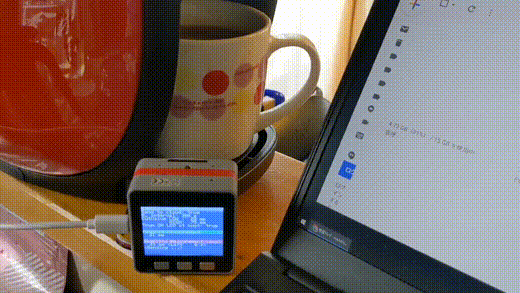
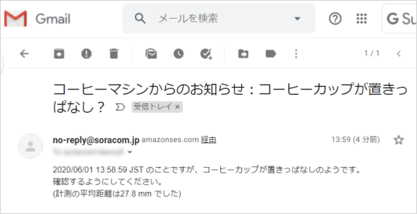
全体の構成
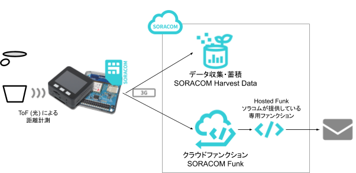
使用する SORACOM サービス
- データ通信サービス SORACOM Air
- データ収集・蓄積サービス SORACOM Harvest Data
- クラウドファンクションサービス SORACOM Funk
本レシピを行うのに必要な時間、概算費用
本レシピは以下の通りです。
- 必要な時間: 約1時間30分
- 概算費用: 約15,500円
※ 概算費用: ハードウェアや SORACOM を始めとした各種サービスの概ねの費用 (税や送料などの付帯費用や無料枠適用は考慮しないものとしています)
このコンテンツの進め方
ページの内容を読み、また作業を行ったら右下の［Next］を押して次のステップへ進みます。また、［Back］を使って戻ったり、左のナビゲーションメニューでもページの移動が可能です。
左上の［×］を押してコンテンツを終了することができます。また、ページを開きなおすことで再開できます。ページのアドレスはブラウザの［履歴］メニューを利用してください。
本レシピを行うためには以下のものをご用意ください。
ハードウェア
品名 | 数量 | 価格 | 購入先 | 備考 |
M5Stack Basic 3G 拡張ボード セット | 1 | 12,800円 | M5Stack と M5Stack 用 3G 拡張ボードをそれぞれ準備いただいてもレシピを進めることができます。 M5Stack 用 3G 拡張ボードが対応している M5Stack は Basic と Gray の2モデルです。M5Stack FIRE は非対応ですのでご注意ください。 | |
SORACOM 特定地域向け IoT SIM (plan-D / データ通信のみ / nanoSIM サイズ) | 1 | 852円 | サイズは nano をお求めください。「マルチカット」には nano サイズが含まれています。 | |
対辺1.5mm 六角レンチ(ドライバー) | 1 | 約410円 | M5Stack 用 3G 拡張ボードへ SIM を挿す際にボードの取り付け・取り外しに使用します。 | |
M5Stack用ToF測距センサユニット | 1 | 約1,430円 | 光を利用した距離センサーです。取り付け用の Grove ケーブルが1本添付されています。 | |
開発用パソコン | 1 | ― | ― | Arduino IDE と M5Stack 開発環境が整っていること。 セットアップ方法は 【SORACOM ハンズオン】M5Stack 開発環境セットアップ (Windows / macOS 共通) (全体で約90分) をご覧ください。 |
(必要な方のみ) USB 変換アダプタ | 1 | ― | ― | パソコンに USB Type-A ポートがない場合に準備してください。 1A 以上の電力が供給できるものを利用してください。(USB 3.0以上に対応していれば概ね安心です) |
(必要な方のみ) USB Type-C ↔ Type-C ケーブル | 1 | ― | ― | パソコンに USB Type-A ポートが用意できず、また、USB 変換アダプタも用意できない場合に準備してください。 |
※ 金額はレシピ作成時となります。ソラコムで販売している金額は税抜き・送料別です。その他は参考価格となります。
その他必要なもの
必要なもの | 費用 | 作成方法など |
SORACOM アカウント | 無料※ |
※ アカウント作成・維持の費用の料金です。
設置に利用したもの
本レシピで設置時に利用した部材です。必須ではありませんがご参考にお使いください。
品名 | 数量 | 備考 |
コーヒーマシン | 1 |
バリスタ i[アイ]を利用しました。 |
USB 型 AC アダプタ | 1 | M5Stack への電源供給用です。1A以上供給できるものが望ましいでしょう。 |
USB Type-C ケーブル | 1 | M5Stack への電源供給用です。 |
両面テープ | ― | ToF 距離センサーの固定用です。 |
M5Stack 用 3G 拡張ボード(以下、3G拡張ボード)には SIM スロットが備わっており、ここに SIM を入れることで 3G 通信が可能となります。 SIM の取り付け・取り外しは 3G拡張ボードをケースから取り外す必要があります。
3G拡張ボードをケースから取り外す
3G拡張ボードの四隅にあるネジを取り外します。ネジは紛失しないようにしてください。

SIM を取り付ける（取り外し方法含む）
SIM のサイズは nano です。取り付けはSIMをスロットに挿入したら「カチッ」と音が鳴るまで押し込みます。音が鳴ったら完了です。取り外しはSIMを奥まで押し込み「カチッ」と音が鳴ればSIMが出てきますので取り外しできます。

3G拡張ボードをケースに取り付ける
再度3G拡張ボードをケースに取り付けます。取り付け向きはピンが外側 (ケースから飛び出るように) します。逆向き (ピンがケースの内側を向いてしまっている) には取り付け内でください。
最後はネジで固定します。

重ねる
取り付け終わったら一番下から「BOTTOM」「3G拡張ボード」「Core※」と重ねていきます。
※ Core = M5Stack の LCD(モニター)やボタンがついているモジュール
以上で3G 拡張ボードへの SIM 取り付け作業は完了です。
3G 拡張ボードを使って SORACOM Air によるセルラー通信を行い、3G 拡張ボードの動作確認を行います。
セルラー通信ライブラリのインストール
3G 拡張ボードで利用できる通信ライブラリをインストールします。今回は TinyGSM というオープンソースライブラリを利用して、世界時計を M5Stack で表示してみます。
［スケッチ］>［ライブラリをインクルード］>［ライブラリを管理...］をクリックします

※ 画面は macOS ですが、Windows も同様です。
"TinyGSM" をインストールする
ライブラリマネージャの一覧から TinyGSM (by Volodymyr Shymanskyy) を選んで［インストール］をクリックします。
バージョンはインストール時における最新バージョンを選んでください。

インストールが終了したら［閉じる］をクリックします。
World Time API を取得して表示するスケッチ
動作テストを兼ねて世界時計を API で提供している World Time API から日時を取得して表示します。
Arduino IDE を起動し［ファイル］>［新規ファイル］を開くと void setup() { から始まる「空のスケッチ」が表示されます。
一度スケッチの内容を削除してから、後述のスケッチで置き換えてください。

m5stack_3gextboard_worldclock.ino
/*
* Copyright (c) 2019 Kohei "Max" MATSUSHITA
* Released under the MIT license
* https://opensource.org/licenses/mit-license.php
*/
#include <M5Stack.h>
#define TINY_GSM_MODEM_UBLOX
#include <TinyGsmClient.h>
TinyGsm modem(Serial2); /* 3G board modem */
TinyGsmClient ctx(modem);
void setup() {
Serial.begin(115200);
M5.begin();
M5.Lcd.clear(BLACK);
M5.Lcd.setTextColor(WHITE);
M5.Lcd.println(F("M5Stack + 3G Module"));
M5.Lcd.print(F("modem.restart()"));
Serial2.begin(115200, SERIAL_8N1, 16, 17);
modem.restart();
M5.Lcd.println(F("done"));
M5.Lcd.print(F("getModemInfo:"));
String modemInfo = modem.getModemInfo();
M5.Lcd.println(modemInfo);
M5.Lcd.print(F("waitForNetwork()"));
while (!modem.waitForNetwork()) M5.Lcd.print(".");
M5.Lcd.println(F("Ok"));
M5.Lcd.print(F("gprsConnect(soracom.io)"));
modem.gprsConnect("soracom.io", "sora", "sora");
M5.Lcd.println(F("done"));
M5.Lcd.print(F("isNetworkConnected()"));
while (!modem.isNetworkConnected()) M5.Lcd.print(".");
M5.Lcd.println(F("Ok"));
M5.Lcd.print(F("My IP addr: "));
IPAddress ipaddr = modem.localIP();
M5.Lcd.print(ipaddr);
delay(2000);
}
void loop() {
M5.update();
M5.Lcd.clear(BLACK);
M5.Lcd.setCursor(0, 0);
M5.Lcd.println(F("World Clock from worldtimeapi.org"));
/* HTTP GET example */
if (!ctx.connect("worldtimeapi.org", 80)) {
Serial.println(F("Connect failed."));
return;
}
Serial.println(F("connected."));
/* send request */
ctx.println("GET /api/timezone/Asia/Tokyo.txt HTTP/1.0");
ctx.println("Host: worldtimeapi.org");
ctx.println();
Serial.println("sent.");
/* receive response */
while (ctx.connected()) {
String line = ctx.readStringUntil('\n');
Serial.println(line);
if (line == "\r") {
Serial.println("headers received.");
break;
}
}
char buf[1 * 1024] = {0};
ctx.readBytes(buf, sizeof(buf)); /* body */
ctx.stop();
M5.Lcd.println(buf);
delay(1000 * 10);
}マイコンボードに書き込む
M5Stack を PC に取り付けた後、Arduino IDE で ボタンをクリックします。ボードへの書き込みが完了しました。と表示されたら正常終了です。
ボタンをクリックします。ボードへの書き込みが完了しました。と表示されたら正常終了です。
実行の様子
最初にモデムの型番や IP アドレスを表示した後に World Time API から取得したデータを表示します。


うまく動作しなかった場合
症状 | 考えられる原因 | 対策 |
| 3G 拡張ボードで内部エラーが発生している可能性がある | カスタマーサポートへご連絡ください。 |
| SIM が取り付けられていない。(もしくは SORACOM IoT SIM ではない) | SORACOM 特定地域向け IoT SIM plan-D を取り付けてください。 |
電波が圏外もしくは微弱である可能性がある | 窓際等、通信条件が良い環境でお試しください。 | |
SIM が SORACOM に登録されていない ※ SORACOM ユーザーコンソールで確認できます ( "登録されてない" 事が確認できます) | 発注済みの SIM を登録する もしくは 通販サイトやイベント等で入手した SIM を登録する を行ってください。 | |
SIM の「状態」が "準備完了" となっている（ "使用中" でない） ※ SORACOM ユーザーコンソールで確認できます | 当該 SIM のチェックボックスをチェックしてから［操作］>［使用開始］をクリックして "使用中" に変更してください。 |
以上で M5Stack の開発環境から M5Stack 本体と 3G 拡張ボードの動作確認が完了しました。
ToF 距離センサーは Grove ケーブルを使用して M5Stack 横の Grove ポートに接続します。
ToF 距離センサー側

M5Stack 側

ToF センサーは M5Stack の底面に取り付けるのが良いでしょう。私は両面テープで取り付けました。

取り忘れをセンシングするスケッチを M5Stack へ書き込みます。
ToF 距離センサーライブラリのインストール
M5Stack で ToF 距離センサーを利用するためのライブラリをインストールします。今回はVL53L0X library for Arduinoというオープンソースライブラリを利用します。
［スケッチ］>［ライブラリをインクルード］>［ライブラリを管理...］をクリックします
※ 画面は macOS ですが、Windows も同様です。
"VL53L0X" をインストールする
ライブラリマネージャの一覧から VL53L0X (by Pololu) を選んで［インストール］をクリックします。
バージョンはインストール時における最新バージョンを選んでください。

インストールが終了したら［閉じる］をクリックします。
JSON 処理ライブラリのインストール
M5Stack で JSON 形式の構造化テキストを処理するためのライブラリをインストールします。今回はArduinoJsonというオープンソースライブラリを利用します。
［スケッチ］>［ライブラリをインクルード］>［ライブラリを管理...］をクリックします
※ 画面は macOS ですが、Windows も同様です。
"ArduinoJson" をインストールする
ライブラリマネージャの一覧から ArduinoJson (by Benoit Blanchon) を選んで［インストール］をクリックします。
バージョンはインストール時における最新バージョンを選んでください。

インストールが終了したら［閉じる］をクリックします。
HTTP 通信ライブラリのインストール
M5Stack で HTTP 通信を行うライブラリをインストールします。今回はArduinoHttpClientというオープンソースライブラリを利用します。
［スケッチ］>［ライブラリをインクルード］>［ライブラリを管理...］をクリックします
※ 画面は macOS ですが、Windows も同様です。
"ArduinoHttpClient" をインストールする
ライブラリマネージャの一覧から ArduinoHttpClient (by Arduino) を選んで［インストール］をクリックします。
バージョンはインストール時における最新バージョンを選んでください。

インストールが終了したら［閉じる］をクリックします。
時間割り込みライブラリのインストール
M5Stack で時間による割り込み(疑似的に複数の処理を進行させる)ためのライブラリをインストールします。今回はTickerSchedulerというオープンソースライブラリを利用します。
TickerScheduler はライブラリマネージャーの一覧に無いため、ZIP ファイルのダウンロード → 手動インストールという手順を踏みます。
ZIP ファイルをダウンロードする
Github を開き、［Clone or Download］>［Download ZIP］をクリックします。すると TickerScheduler-master.zip がダウンロードできます。
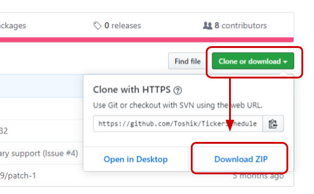
ZIP 形式のライブラリをインストールする
(ここからの画面は Windows ですが macOS も同様に進んでください)
Arduino IDE を開き、メニューの［スケッチ］>［ライブラリをインクルード］>［.ZIP 形式のライブラリをインストール...］と進みます。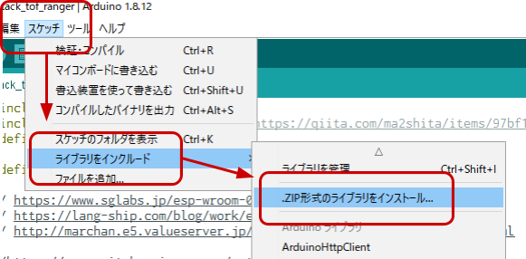
ダイアログで先ほどダウンロードしたファイル TickerScheduler-master.zip を選択して［開く］をクリックします。
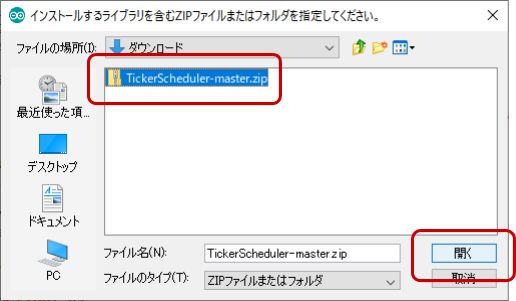
以上でインストールは完了です。
スケッチを入手する
Arduino IDE を起動し［ファイル］>［新規ファイル］を開くと void setup() { から始まる「空のスケッチ」が表示されます。
一度スケッチの内容を削除してから、m5stack_tof_ranger.ino の内容と置き換えてください。
マイコンボードに書き込む
M5Stack を PC に取り付けた後、Arduino IDE でボタンをクリックします。ボードへの書き込みが完了しました。と表示されたら正常終了です。
以上で書き込みは完了です。
「コーヒーカップの有無」を検出するためのパラメータを決定していくために、計測モードで設置を行います。
計測モードとはクラウドとの通信をせずに距離のセンシングのみを行うモードです。設置した際に得られた計測データを基に、「コーヒーカップの有無」を検出するためのパラメータを決定していきます。
コーヒーカップの有無を検出する仕組みとパラメータ
コーヒーカップがない場合は、バリスタのカバー部分までの距離が返ってきます。こーひカップが置かれるとカップまでの距離が返ってくるため、その情報で「有無」を見分ける仕組みです。
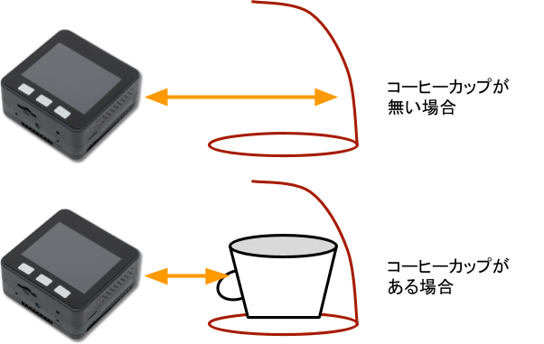
計測誤差を吸収するためのパラメータ
センサーは誤差が発生するものです。また、コーヒーカップの置き場所の微妙な違いによるズレも生じることから、誤差を吸収する仕組みが必要です。本スケッチでは「複数回の計測」と「範囲の指定」という2つの方法で計測誤差を取り除いています。
「複数回の計測」は、何度か計測をして正確な値を確率的に得る方法です。本スケッチでも同様の手法を実装しており、標準設定では5回計測するようにしています。
2つ目の「範囲の指定」は、LOW と HIGH というパラメータを用意しその中に収まっているか否かで判定する仕組みです。この2つのパラメータを調整することで、設置場所に柔軟性を持たせることが可能です。
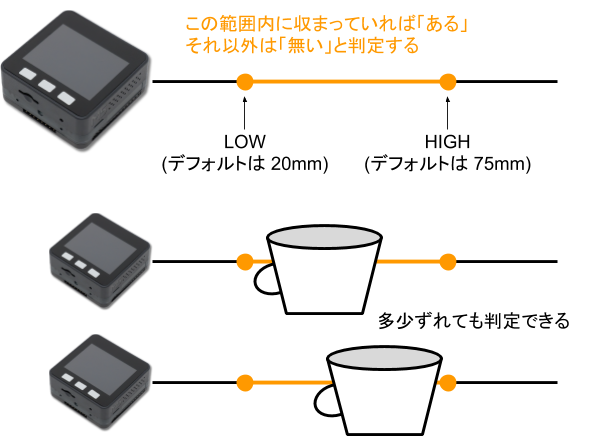
これにより、ある程度ずれても「範囲の内外」を「コーヒーカップの有無」として判定することができます。
M5Stack を計測モードで起動する
M5Stack の A ボタン(3つあるうちの一番左のボタン)を押しながら、電源ボタン(側面のボタン)を押してください。Skip fetching config from Cloud と表示され、すぐにメイン画面に移行します。
一行目に Config (by Local) と表示されていれば計測モードです。
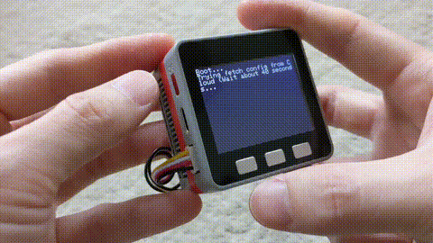
設置して計測値をメモしておく
M5Stack を実際に設置します。この時、画面の Oneshot Measurement の数値に注目します。

カップを置かずに得た数値の概ねの平均値の 10%増を HIGH としてメモします。(例: 概ね120mm であれば 132 を HIGH とする)。また、カップを置いた時の概ね平均値の 10%減の値を LOW としてメモします。(例: 概ね60mm であれば 54 を LOW とする)。
メモが出来たら次に進みます。
メモをしたパラメータを「SORACOM Air メタデータサービス」に保存します。
SORACOM ユーザーコンソールの［Menu］>［SIM 管理］とクリックして SIM 管理画面を開きます。

メタデータを設定したい SIM (Wio LTE に取り付けた SIM) にチェックを付け、［詳細］をクリックします。
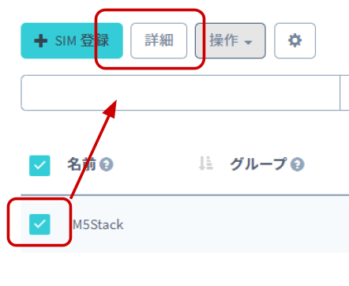
「SIM 詳細」で［タグ］>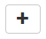をクリックします。
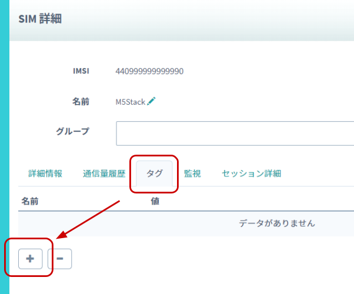
「タグの編集」で以下のように設定します。
この時 CUT_VALUE_LOW_MM の 20 には先ほどメモをした LOW の値を、CUT_VALUE_HIGH_MM の 70 には先ほどメモをした HIGH の値になるようにしてください。
例: メモした LOW が 54、HIGH が 132 であれば {"CUT_VALUE_LOW_MM": 54, "CUT_VALUE_HIGH_MM": 132} とします。
項目 | 設定値 |
名前 |
|
値 |
|
※1行で入力してください。
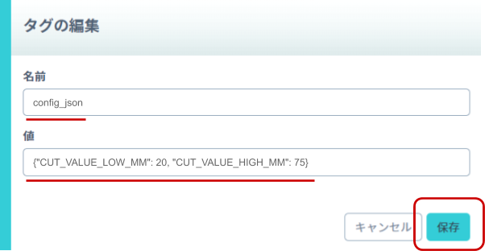
最後に［保存］をクリックし、「SIM 詳細」では［閉じる］をクリックしてください。
これで、SIM に対してタグ付けが完了しました。
M5Stack に取り付けた SIM に「SORACOM Air メタデータサービス」と「SORACOM Harvest Data」の設定を行います。
SORACOM ユーザーコンソールの［Menu］>［SIM 管理］とクリックして SIM 管理画面を開きます。
M5Stack に取り付けた SIM) にチェックを付け、［操作］>［所属グループ変更］とクリックします。

「新しい所属グループ」のプルダウンボックスをクリックした後、［新しいグループを作成...］をクリックします。

「グループ作成」のグループ名を入力して［グループ作成］をクリックします。
項目 | 例 | 備考 |
グループ名 |
| 自由に入力可能です。日本語も設定可能です。 |

SIM 管理画面で割り当てたグループ名をクリックします。

［SORACOM Air for Cellular 設定］をクリックして設定が出来るように開きます。
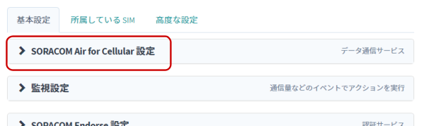
「SORACOM Air for Cellular 設定」で以下のように設定します。
項目 | 設定値 | 備考 |
メタデータサービス設定（スイッチ） | ON | スイッチはクリックすることで OFF から ON に切り替えることができます |
※ その他の項目の変更や編集は不要です。
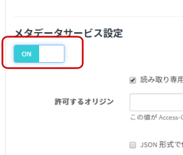
その後［保存］をクリックしてください。また、同じページ内での設定が続くため、ページは閉じないでください。
［SORACOM Harvest Data 設定］をクリックして設定ができるように開きます。
先ほどの設定を行ったページ内にあります。

「SORACOM Harvest Data 設定」で以下のように設定します。
項目 | 設定値 | 備考 |
（スイッチ） | ON | スイッチはクリックすることで OFF から ON に切り替えることができます。 |

その後［保存］をクリックしてください。
その後表示される「SORACOM Harvest Data が有効になっています」のダイアログでは［OK］をクリックしてください。
以上で「SORACOM Air メタデータサービス」と「SORACOM Harvest Data」の設定が完了しました。
デバイスからのデータを SORACOM Harvest Data で確認します。
SORACOM ユーザーコンソールの［Menu］>［SIM 管理］とクリックして SIM 管理画面を開きます。
M5Stack に取り付けた SIM) にチェックを付け、［操作］>［データを確認］とクリックします。

表示された画面で［自動更新］を ON にします。
この表示された画面が SORACOM Harvest Data の画面となります。
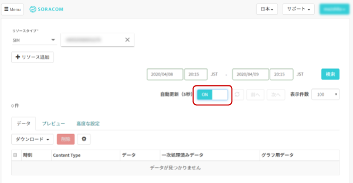
M5Stack の電源ボタン(側面のボタン)を一度押してリセットします
(A ボタンなど何も押さずに) 起動するとデータ送信モードとして動作し、クラウド(SORACOM Harvest Data) へデータ送信が開始されます。一行目に Config (by Cloud) もしくは Config (by Default) と表示されていればデータ送信モードです。
データ送信モードの時は起動時にクラウド(SORACOM Air メタデータサービス)から設定情報を読み込むため、起動に約30~40秒ほどかかります。また SORACOM Air メタデータサービスで設定した値は画面上に表示されますので、設定が正しくできているか確認できます。（自分で設定した値とは異なる情報が出ている場合は、正しく設定できていない可能性があるため、メタデータの設定を再確認してください）
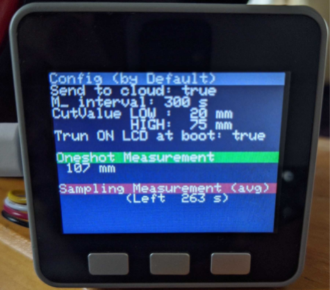
コーヒーカップを置いてみる
本スケッチでは「5分毎にコーヒーカップの有無を確認し、ある時にデータ送信をする（＝無い時にはデータ送信を行わない）」仕組みです。実際にコーヒーカップを置いてみて、データが送信されるか確認します。
次回の計測タイミングは Sampling Measurement の "Left" に残り秒数が表示されていますので目安にしてください。
Left が 0s になると計測と判定がされます。コーヒーカップが「無い」と判定されれば nan mm と表示され、「ある」と判定されれば、コーヒーカップまでの平均距離が mm 単位で表示されます。(nan = Not a Number; 非数)
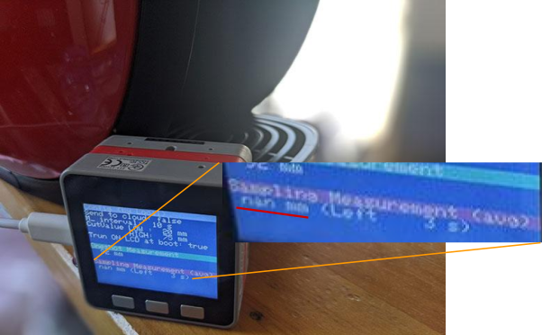
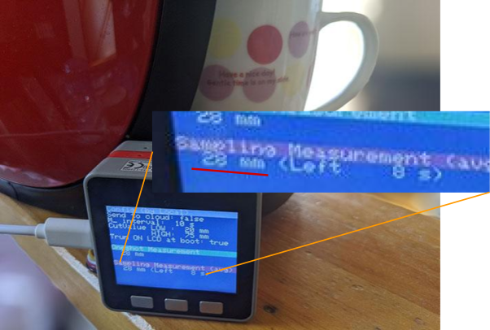
SORACOM Harvest Data では以下のように確認できます。コーヒーカップを置いて15分ほど放置した様子です。
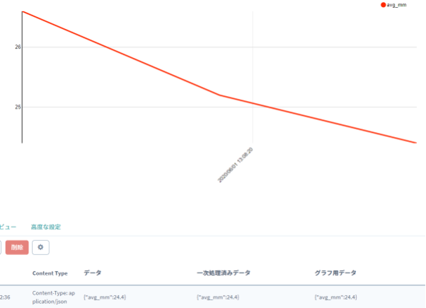
以上でデータ送信の確認は終了です。
「コーヒーカップがある」時にデータが送信されてくるため、そのタイミングでメールの通知を行えるように設定してみましょう。そのためには、クラウドファンクションアダプタ SORACOM Funk を利用します。
本ハンズオンでは、あらかじめソラコムが用意した AWS アカウントの Lambda Function (Hosted Funk) を利用することで、簡単にメールが送信が可能です。
SORACOM ユーザーコンソールの［Menu］>［SIM 管理］とクリックして SIM 管理画面を開きます。
SIM 管理画面で割り当てたグループ名をクリックします。
［SORACOM Air for Cellular 設定］をクリックして設定が出来るように開きます。
「SORACOM Air for Cellular 設定」で以下のように設定します。
項目 | 設定値 | 備考 |
メタデータサービス設定 / ユーザーデータ |
| ― |
※ その他の項目の変更や編集は不要です。
文章
コーヒーマシンからのお知らせ：コーヒーカップが置きっぱなし？
{{etc.timestamp}} のことですが、コーヒーカップが置きっぱなしのようです。
確認するようにしてください。
(計測の平均距離は{{event.avg_mm}} mm でした)
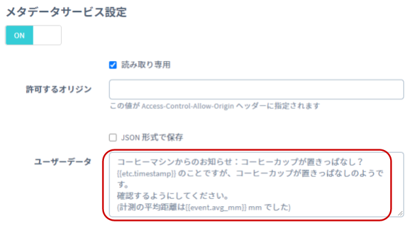
その後［保存］をクリックしてください。また、同じページ内での設定が続くため、ページは閉じないでください。
［SORACOM Funk 設定］をクリックして設定が出来るように開きます。
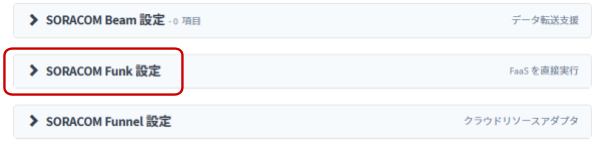
「SORACOM Funk 設定」で以下のように設定します。
項目 | 設定値 | 備考 |
(スイッチ) | ON | スイッチはクリックすることで OFF から ON に切り替えることができます。 |
サービス | AWS Lambda | デフォルトで選択されています。 |
送信データ形式 | JSON | デフォルトで選択されています。 |
認証情報 | 認証情報を指定しない | ― |
関数の ARN |
| ― |
ARN
arn:aws:lambda:ap-northeast-1:762707677580:function:funk-button-email:prod
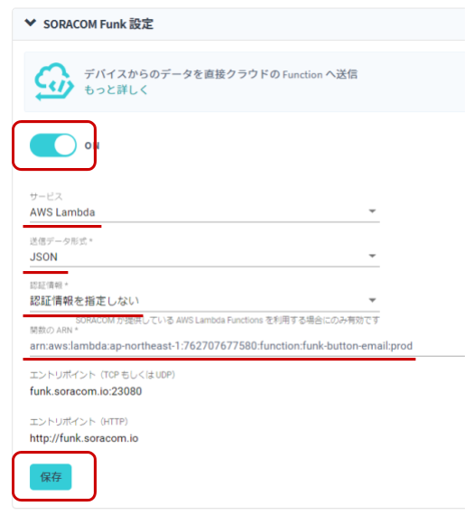
以上で設定は完了です。
M5Stack がコーヒーカップの存在を検出すると、以下のようなメールが SORACOM ユーザコンソールに登録した際のメールアドレスに送信されます。
ここからは、これまで紹介していなかった機能や、本番に向けた設定を紹介します。
LCD (液晶)画面の消灯
M5Stack の LCD 画面は C ボタン(一番右のボタン)を押すことで、消灯することができます。消灯後、再度 C ボタンを押すと点灯します。
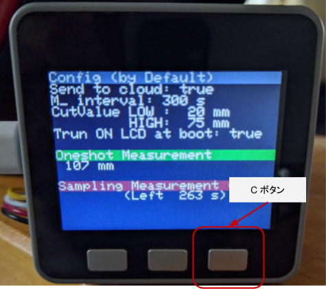
標準では起動時には常に点灯するようになっていますが、 config_json で "LCD_TURN_ON_AT_BOOT": false とすることで起動後に自動的に消灯させることができます。消灯状態で起動しても C ボタンで点灯が可能です。
SORACOM Harvest Data の OFF
通知がき始めたら運用が開始できます。データの記録が不要であれば SORACOM Harvest Data を OFF にしておきましょう。
こうすることで 5円/SIM/日 の費用を抑えることができます。
config_json パラメータリファレンス
これまで CUT_VALUE_LOW_MM や CUT_VALUE_HIGH_MM 、 MEASUREMENT_INTERVAL_SEC といったパラメータを紹介してきましたが、ここで全てのパラメータを紹介します。
パラメータ名 | 役割 | デフォルト値 |
| 物体が「ある」と判定するための最短距離。単位は mm 。 | 20 (mm) |
| 物体が「ある」と判定するための最長距離。単位は mm 。 | 75 (mm) |
| 物体の有無を計測する間隔。単位は秒。 | 300 (秒) |
| 起動後の LCD 画面の制御。true で点灯、 false で消灯。 | true |
| クラウド(SORACOM)への送信制御。 true で送信する、 false で送信しない。 | 計測モードの時は false 送信モードの時は true |
| "Oneshot measurement" による計測間隔。単位はミリ秒。 | 500 (ms) |
| 物体の有無を計測する際に試行する回数。単位は回。 | 5 (回) |
| 物体を計測する際の試行間隔。単位はミリ秒。 | 200 (ms) |
本レシピでは費用がかかるサービスを利用しています。
本項をよく読み、必要な操作や解除作業を行うようにして、想定外の費用が掛からないようにしてください。
費用について
ここで記載している金額は全て税別、送料別となります。
SORACOM プラットフォームの利用料金
サービス／機能 | 料金 |
基本料: 10円/日 通信料: 0.2円~/MB (今回の利用であれば 1MB 以内で収まる範囲) | |
SORACOM Air メタデータサービスの利用料は基本料に含まれています | |
本機能を有効にしたグループに所属する1SIMあたり5円/日 (2000リクエスト/日/SIMを含む) 2000リクエスト/日を超えた分は0.004円/リクエスト | |
0.0018円/リクエスト | |
Hosted Funk の利用料はリクエスト料金に含まれています (今後のサービスアップデートで改訂される可能性があるため、料金表でご確認ください) |
※ 費用詳細はリンク先をご確認ください。
グループ解除
SORACOM Harvest Data 等、「機能が有効になっているグループに所属している SIM × 費用」となっているサービスにおいては、「機能を OFF にする」することで費用の発生を抑えることができます。またもう1つの方法として「グループに所属している SIM の数を減らす(= 解除する)」事でも費用を抑える事ができます。
また、SORACOM Funk はリクエスト発生時毎の従量課金となっているため、作成したグループ内の設定が SORACOM Funk のみとなっていれば、リクエストが発生しなければ費用は発生しません。
グループ解除の方法はグループからの解除 (JP)をご覧ください。
SORACOM Harvest Data のデータ削除（任意）
SORACOM Harvest Data は基本的にはデータ保管料は無料※です。そのため、保存しておいても害はありませんが、デモ等で利用する際にはデータを綺麗にしておく必要が出てくるため、データ削除について解説します。
※発生から40日を超えたデータは削除されます。40日以上データを保管したい場合はデータ保持期間延長オプション利用料金をご利用ください。
SORACOM Harvest Data 画面 (［操作］>［データを確認］) のデータテーブルで、削除したいデータのチェックボックスを付けた後に［削除］をクリックします。表示されたダイアログで改めて［削除］をクリックすると、削除されます。
※ 複数のデータにチェックをつければ一括で削除可能です。

データの復元はできませんのでご注意ください。
本レシピでは、M5Stack と 3G 拡張ボードと ToF 距離センサーを組み合わせた「コーヒーカップ取り忘れ通知デバイス」を作りました。
「距離」によるセンシングは、計測される側（今回はコーヒーカップ）の改造をせずとも物体の有無を簡単に判定できることから、応用例も多く考えられるのではないでしょうか？
今回は ToF 距離センサーを利用しましたが、その他にも超音波を利用した距離センサーもあります。センシングする対象や環境に応じて使い分けることもできるでしょう。